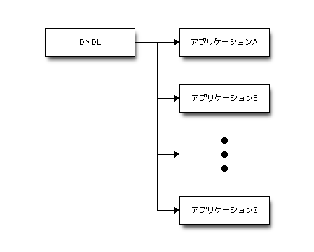
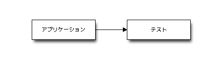
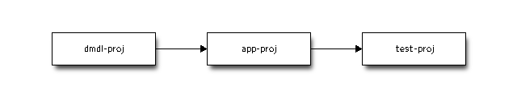

Asakusa Frameworkでマルチプロジェクト
Note
- 2013/12/24 更新: 記事中で使用しているAsakusa Frameworkのバージョンを 0.5.3-RC1 から 0.5.3 にアップデート
この記事は、 Asakusa Framework Advent Calendar 2013 16日目の記事として書いています。
ここでは、 Asakusa Framework を使って開発するアプリケーションを複数のプロジェクトで管理する「マルチプロジェクト」について紹介します。
なお文中では Asakusa Framework 0.5.2 から試験的に対応している Gradle を使ったビルド方法を紹介していますが、Mavenでも基本的なところは同じように扱えます。
Note
Asakusa Framework で Gradle を利用する方法について詳しくは Asakusa Framework Documentaiton - Askusa Gradle Plugin利用ガイド を参照してください。。
マルチプロジェクト、いつやるの？
こんなことがやりたくなった時にマルチプロジェクトしたほうがいいかも、という例をいくつか紹介します。
複数のアプリケーションでデータモデルやビジネスロジックを共有する
個人的にはこれが最もあるかなと思います。Asakusaの場合、この中でも特にデータモデル（DMDLの定義）を複数のアプリケーションで共有したい場合が一番多いかと。
このような場合、共通のデータモデルや演算子のみを管理するプロジェクトを作成し、これを複数のアプリケーションプロジェクトから参照するという構成になります。例えばDMDLのみのプロジェクトを作る場合は、以下のようなイメージですね。

アプリケーション本体とテストを分けて管理する
先に構成のイメージ例を出すと、最もシンプルなものは以下のイメージですね。

この管理方式の使いどころはいろいろあると思いますが、いくつか紹介します。
テストの位置づけで分離
例えばテストを開発者自身のテストと、ユーザもしくはQ/A担当やテストチーム側で作成するテストという位置づけで分けた場合、前者のテストはアプリケーション本体のプロジェクトで、後者は別プロジェクトで管理するといった使い方です。
スローテストを分離
やむなくスローテストとなるテストケースを記述する場合に、これを別プロジェクトに分離しておく、という手もあるかと思います。このような場合に多いのは、外部のシステムから出力したデータをそのままテストデータに使う、という場合だと思います。
作業環境で分離
TestDriverでのテスト定義をExcelで行う場合、Windows上での作業とLinux上での作業を並行して行う場合にテストプロジェクトを分けておくと、いろいろなトラブルに見舞われなくてよいかもしれません。ファイルコピーやファイル共有ではまった、という声をたまに聞くので...。
はじめてのマルチプロジェクト
ここからは実際にマルチプロジェクトを構築するための手順を紹介します。
ここではシンプルな例として、Asakusa Gradle Plugin のドキュメントページで公開しているサンプルアプリケーションに対して、これを以下の3つのプロジェクトに分解してマルチプロジェクトを構築してみます。
- dmdl-proj : DMDLプロジェクト
- DMDLのみを持つプロジェクト
- app-proj : アプリケーションプロジェクト
- Asakusa DSLのみを持つプロジェクト。 dmdl-proj で作成したデータモデルクラスを利用する。
- test-proj : テストプロジェクト
- テストのみを持つプロジェクト。 app-proj で作成したバッチアプリケーションを参照する。
イメージは以下のようになります。

0.準備-サンプルアプリケーションの動作確認まで
まずは環境の準備と、マルチプロジェクト化する前のサンプルアプリケーションが正常に動作することの確認をしておきましょう。
# 今回用の作業ディレクトリ
mkdir -p $HOME/advent2013/
cd $HOME/advent2013/
# サンプルアプリケーションプロジェクトを取得して展開 (バージョン 0.5.3)
wget http://www.asakusafw.com/download/gradle-plugin/asakusa-example-project-0.5.3.tar.gz
tar xf asakusa-example-project-*.tar.gz
cd asakusa-example-project
# Asakusaのインストールとサンプルアプリのフルビルド
./gradlew installAsakusafw
./gradlew build
# 成功したら、一旦cleanしておく
./gradlew clean
Attention
本エントリではAsakusa Frameworkのバージョン 0.5.3 を使っています。 0.5.2 のAskusa Gradle Pluginだとこのエントリのとおりに記述してもビルドが通らない箇所があるのでご注意ください。
Asakusa Frameworkのリリース情報は以下のリリースノートを確認してください。
http://asakusafw.s3.amazonaws.com/documents/latest/release/ja/html/release-notes.html
1.サンプルアプリケーションを分解する
サンプルアプリケーションに含むファイルを以下のように3つにばらしてマルチプロジェクトとして構築します。
- dmdl-proj
- サンプルアプリケーションをコピーして、DMDLのみを残す。
- Asakusa DSLとテストを削除。
- app-proj
- サンプルアプリケーションをコピーして、アプリケーション(Asakusa DSL)のみを残す。
- DMDLスクリプトとテストを削除。
- test-proj
- サンプルアプリケーションをコピーして、テストクラスとテストデータのみを残す。
- DMDLスクリプトとAsakusa DSLを削除。
上記の通りにプロジェクトを作ります。
cd $HOME/advent2013/
# DMDLプロジェクトを作成
cp -r asakusa-example-project dmdl-proj
rm -fr dmdl-proj/src/main/java/com
rm -fr dmdl-proj/src/test/java/com
rm -fr dmdl-proj/src/test/resources/com
# アプリケーションプロジェクトを作成
cp -r asakusa-example-project app-proj
rm -fr app-proj/src/main/dmdl/*
rm -fr app-proj/src/test/java/com
rm -fr app-proj/src/test/resources/com
# テストプロジェクトを作成
cp -r asakusa-example-project test-proj
rm -fr test-proj/src/main/dmdl/*
rm -fr test-proj/src/main/java/com
2.親プロジェクトの作成
マルチプロジェクト全体を管理するための親プロジェクトを作成します。
Gradleではマルチプロジェクト管理にいろいろな方式があるのですが、ここでは master という親プロジェクトを他のプロジェクトと同じ階層に作成するフラットレイアウト方式を採用します。
master プロジェクトにはGradle Wrapperを配置した上で、マルチプロジェクトに含めるプロジェクトを定義する設定ファイル settings.gradle を作成します。
では親プロジェクトの作成
cd $HOME/advent2013/
# 親プロジェクトディレクトリを作成
mkdir master
# サンプルアプリケーションからGradle Wrapperだけを持ってくる
cp -r asakusa-example-project/gradle* master
# settings.gradleの作成
echo 'includeFlat "dmdl-proj", "app-proj", "test-proj"' > master/settings.gradle
settings.gradle にはマルチプロジェクトに含めるプロジェクト名を定義します。今回はDMDL, アプリケーション, テスト用のプロジェクトの3つですね。 settings.gradle に記述していないプロジェクトは、同階層に存在してもビルド時には無視されます。
master/settings.gradle
includeFlat "dmdl-proj", "app-proj", "test-proj"
Note
Mavenの場合は、親プロジェクト用の pom.xml を定義して、そこにマルチプロジェクトに含めるプロジェクトを定義します。
3. DMDLプロジェクト
ここからは各プロジェクト設定を見ていきます。 まずは DMDLのみを持つプロジェクトです。アプリケーションから参照される側のプロジェクトですね。
マーカーファイルの配置
このプロジェクト自体はこのままなにもせずにビルド出来るのですが、アプリケーション側でDSLコンパイル(Gradle Pluginでは compileBatchapp タスクで実行)を行う際に、このプロジェクトで生成されたライブラリをバッチアプリケーションプロジェクトに含めるためには マーカーファイル というものを配置する必要があります。
マーカーファイルはプロジェクトのクラスパスが通っているディレクトリ配下に META-INF/asakusa/fragment という空ファイルとして作成します。通常は src/main/resources あたりに置いておけばOKです。
ではDMDLプロジェクトにマーカーファイルを配置してビルドします。
cd $HOME/advent2013/dmdl-proj
# マーカーファイルの作成
mkdir -p src/main/resources/META-INF/asakusa
touch src/main/resources/META-INF/asakusa/fragment
# ビルド
./gradlew build
ビルドが成功すると、このプロジェクトではDMDLスクリプトから生成されたデータモデルクラスが生成されます。
4.アプリケーションプロジェクト
Asakusa DSLで記述するアプリケーションのみを持つプロジェクトです。DMDLプロジェクトで作成したデータモデルクラスを利用します。
依存関係の設定
アプリケーションプロジェクトからDMDLプロジェクトで作成したデータモデルクラスを利用するためには、アプリケーションプロジェクトのビルド定義 (Gradleの場合は build.gradle 、Mavenの場合は pom.xml )でDMDLプロジェクトの成果物を参照するように定義します。
ここでは、 build.gradle を編集して、 dependencies ブロックにDMDLプロジェクトを参照する以下の1行を追加します。
app-proj/build.gradle
dependencies {
...
// DMDLプロジェクトを参照
compile project(':dmdl-proj')
}
build.gradle を編集したらビルドします。
cd $HOME/advent2013/app-proj
# ビルド
./gradlew build
ビルドが成功したら、きちんとDMDLプロジェクトの成果物を参照してビルドが行えたことになります。このプロジェクトではDSLコンパイルが実行され、バッチアプリケーションが生成されます。
5.テストプロジェクト
Asakusa DSLに対するテストクラスとそのテストで利用するテストデータ定義のみを持つプロジェクトです。アプリケーションプロジェクトで作成したアプリケーションを利用します。
依存関係の設定
アプリケーションプロジェクトを利用するための依存関係の設定を行います。定義方法は 4.アプリケーションプロジェクト で説明した依存関係の設定方法と同様です。
build.gradle を編集して、アプリケーションプロジェクトを参照する以下の1行を追加します。
test-proj/build.gradle
dependencies {
...
// アプリケーションプロジェクトを参照
compile project(':app-proj')
}
ビルドします。
cd $HOME/advent2013/test-proj
# ビルド
./gradlew build
テストが全て成功すれば、正しく設定されたことになります。
6.フルビルド
マルチプロジェクトに含むプロジェクト全体をビルドしたい場合には、 master プロジェクト上でビルドします。
cd $HOME/advent2013/master
# ビルド
./gradlew clean build
補足.親プロジェクトで依存関係をまとめて設定
4.アプリケーションプロジェクト や 5.テストプロジェクト では各プロジェクト個別に依存関係を設定しましたが、 Gradleでは親プロジェクト側でマルチプロジェクトに属する依存関係をまとめて設定することも出来ます。
親プロジェクト側でサブプロジェクトの依存関係を設定するには、 master プロジェクトに build.gradle を作成し、以下のように記述します。
master/build.gradle
project(':app-proj') {
afterEvaluate {
dependencies {
compile project(':dmdl-proj')
}
}
}
project(':test-proj') {
afterEvaluate {
dependencies {
testCompile project(':app-proj')
}
}
}
この方法だと、マルチプロジェクトに属するプロジェクト全体の依存関係が1ファイルに集約されているのでプロジェクト構成の全体像が把握しやすいかも。
Gradleではこの他にもいろいろなビルドの定義方法が可能で、例えば親プロジェクトのビルド定義のみですべてのプロジェクトの設定を行う、といったことも可能です。興味があればどのような記述方法がよいかいろいろ検討してみて下さい。かくいう私もこのあたりはまだ試行錯誤してます。Gradleはなかなか奥が深い...。
まとめ
ということでマルチプロジェクトについて紹介しました。
マルチプロジェクトはうまく使うと全体の見通しがよくなり、重複コードの排除や効率のよい作業分担が可能になるなどメリットが多いと思うので、ぜひ検討してみてください。
マルチプロジェクトの定義方法は、一度やり方がわかってしまえば簡単だと思います。 マーカーファイル を利用するところはAsakusa Framework固有の機能なので、これを忘れてはまらないように気をつけてください。
Tweet